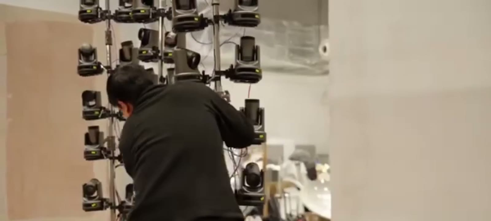
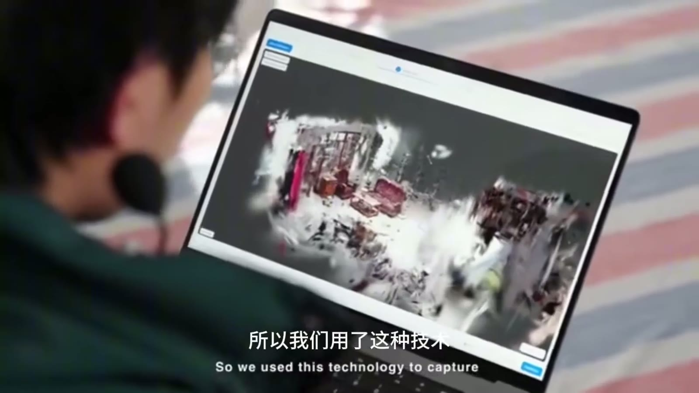
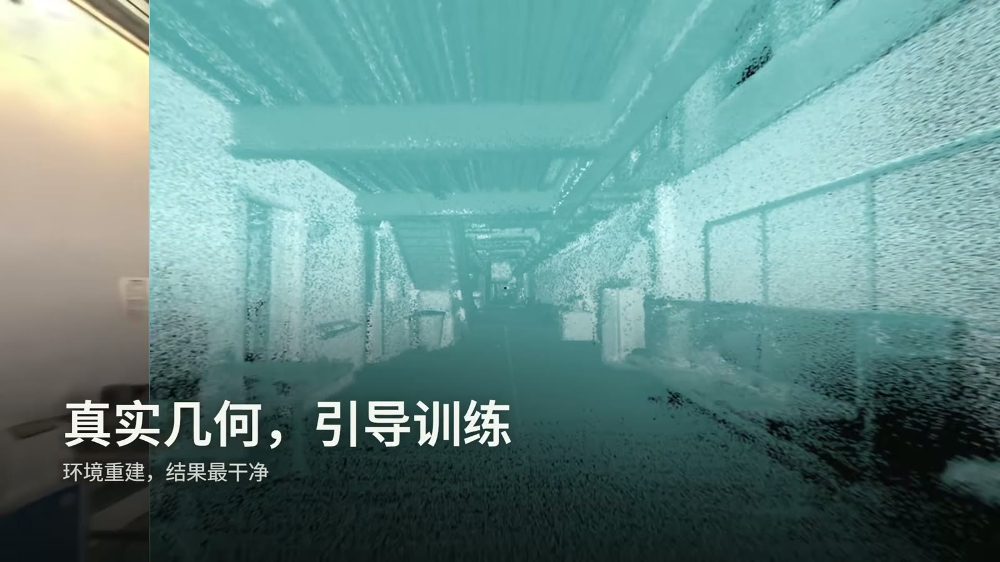
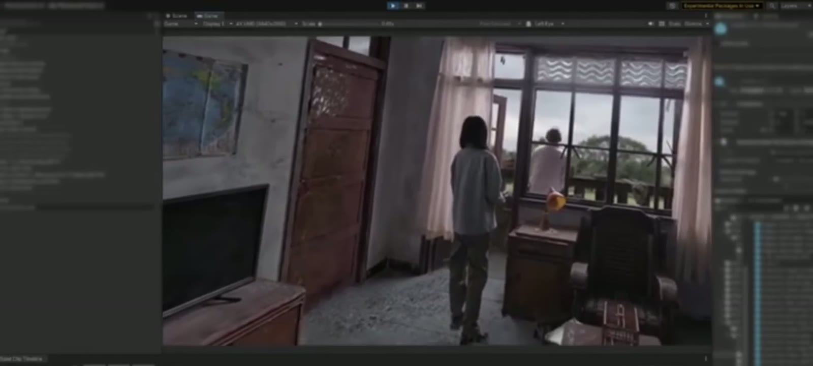
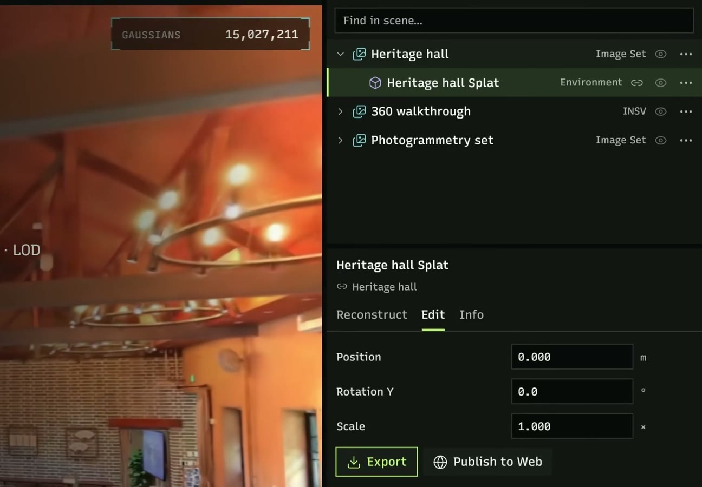

本课导览：把「好」拆开看
前九次课你已经有一件能跑的作品了。这一课不写代码、不调参数，只做一件事：看看世界在奖励什么样的 VR，再回来照一照自己的作品。
你大概问过这三个问题：「我这算 VR 吗？」「那些获奖作品是不是用了很贵的技术？」「我这个东西能拿去做什么？」这三个问题，本质上都是坐标系问题——你得先知道世界上最好的东西长什么样，才知道自己站在哪里。
世界在奖励的，不是「技术很新」，而是「你真的让我在场」。
而「在场」这件事，从来是用代价换来的。
一、为什么用「奖」当坐标系
奖项的好处是：它把「好」拆成了可核对的标准——谁在评、评什么、评了多久。而且 2026 年刚好有一件中国作品（《鸽环》，张妤琦、陶世欣）拿到内容赛道的最高奖，这件事比任何说教都有说服力。
奖项的坏处是：容易被当成「光环」。所以这一课我们只做一件事——把奖还原成标准。
二、180 分钟怎么排
| 段 | 墙钟 | 时长 | 内容 | 性质 |
|---|---|---|---|---|
| ① 开场 | 0:00—0:10 | 10′ | 三个问题 · 三条赛道 · 纠正「唯一最高奖」 | 讲 |
| ② 内容赛道 | 0:10—0:40 | 30′ | 威尼斯沉浸单元 2016→2026 · 三个奖 · 《鸽环》 · 看片 V1 | 讲 + 放片 + 讨论 |
| ③ 拆一部作品 | 0:40—1:20 | 40′ | 采集→重建→表演→剪辑 · 看片 V2 · 代价 15,827,211 · 两套物理条件 | 讲 + 放片 + 讨论 |
| ④ 课间 | 1:20—1:30 | 10′ | ——（不计入教学时长） | — |
| ⑤ 研究赛道 | 1:30—1:52 | 22′ | IEEE VGTC：五类奖 · 2026 得主 · 奖人不奖作品 | 讲 + 提问 |
| ⑥ 产业赛道 | 1:52—2:15 | 23′ | Laval Virtual 第 28 届 · 4 赛道 + 6 类别 · 三个真指标 | 讲 + 放片 30″ |
| ⑦ 工作坊 | 2:15—2:50 | 35′ | 分组抽赛道 → 写评审单 → 汇报三句 | 学生动手 |
| ⑧ 收束 | 2:50—3:00 | 10′ | 评委问什么→你准备什么 · 作业 · 一句话 | 讲 + 板书 |
教学时长 170 分钟 ＋ 课间 10 分钟 ＝ 180 分钟（逐段相加核对：10+30+40 与 22+23+35+10）。现场两个打卡点：1:20 必须进课间、2:50 必须进收束。
三、本课产出
《作品评审单》：五问 ＋ 3 条评语 ＋ 2 条改进。
每条评语都要带证据。
一页纸：100 字 pitch ＋ 三条自评 ＋ 一条取舍。
11-25 上课前交。
三条赛道，各有各的最高台
VR 没有「唯一最高奖」；有的是三条赛道各自的最高认可，而且它们评的根本不是同一种东西
| 赛道 | 奖项 | 谁在评 | 评什么 |
|---|---|---|---|
| 内容 | 威尼斯沉浸大奖 Venice Immersive Grand Prize | 威尼斯国际电影节 官方竞赛单元 | 作品：在场感与叙事 |
| 研究 | IEEE VGTC 虚拟现实奖 VR Awards | IEEE 可视化与图形技术委员会 | 人：终身贡献、技术成就、博士论文 |
| 产业 | Laval Virtual Awards | 法国拉瓦勒国际 VR / AR 展 | 产品：能不能被别人用起来 |
判断一个奖的分量，先问三件事：谁在评、评什么、评了多久。三个奖评的不是同一种东西，所以它们排不出「第一」。
内容赛道：威尼斯沉浸单元
2016 年设立 ｜ 2026 年第 83 届 ｜ 68 部展映 · 26 个国家和地区 · 30 部入围竞赛
一、2016：一个电影节，为什么要开 VR 单元
2016 年，威尼斯电影节设立「威尼斯沉浸单元」（Venice Immersive）。它不是展映边角料——它是官方竞赛单元，与主竞赛、地平线并列：有入围、有评委、有奖。今天它已经是全球规模最大的沉浸式内容专业活动。
电影节为什么要开这个单元？因为观众不再只是「看」，他们开始「在里面」。
二、2026 年的数字
它不是「人人有奖」的展——30 部里选 3 部，这是今年的竞争强度。
三、三个奖，都是作品奖
| 奖项 | 中文 | 评什么 |
|---|---|---|
| Grand Prize | 威尼斯沉浸大奖 | 单元最高奖。评的是整件作品在沉浸媒介里的完成度 |
| Achievement Prize | 成就奖 | 表彰某一方面突出的成就：技术、叙事或空间设计 |
| Special Jury Prize | 评审团特别奖 | 评委特别推荐：不一定完美，但值得被看见 |
评委由策展人、创作者、艺术家组成——他们看的不是技术参数，是这件作品成不成立。
四、2026 年的三个答案
| 作品 | 作者 / 团队 | 时长 | 形态 | 奖项 |
|---|---|---|---|---|
| 《鸽环》The Pigeon Ring | 张妤琦、陶世欣（中国） | 35 分钟 | VR ＋ 沉浸式装置 | Grand Prize |
| Empire at Sea | Peter Flaherty | 22 分钟 | MR 剧情 | Achievement Prize |
| Out of the Ashes | Rory Mitchell、Nonny de la Peña | 26 分钟 | VR 纪录 | Special Jury Prize |

《鸽环》：一间老屋，一枚丢了的鸽环
张妤琦、陶世欣 ｜ 35 分钟 ｜ VR ＋ 沉浸式装置 ｜ 第 83 届威尼斯沉浸大奖
假期返乡的小林，陪固执的爷爷回到久无人居的老屋，找一枚丢失的鸽环。在翻找物件的过程中，爷爷藏了半生的往事被一点点翻出来——用祖孙之间的相处，勾勒一个普通中国家庭的记忆与亲情。
片尾导演原话：「能够把实拍内容在 VR 里，以 6DoF 的方式展现出来。」
看片之前：三个观察任务
镜头在哪儿？
是导演替你选好了视角，还是「你就在这间屋里」？
光是真的还是渲的？
看窗户、瓷砖、木头的反光——像不像真的？
你能走吗？
能不能绕到桌子后面去，蹲下来看那只鸟笼？
一部 35 分钟的片子，是怎么被做出来的
采集 → 重建 → 表演 → 剪辑：前两步决定「能不能走」，后两步决定「是不是作品」
采集
把真实空间记下来
40 相机阵列 / 扫描
重建
把记录变成可以走的空间
点云 / 4D 高斯
表演
让人的动作留在里面
动捕 / 实拍
剪辑
把素材变成一件作品
时间线 / 对齐
一、采集：一圈相机，人在中间演
片子里用的是「移动式的 4D 摄影系统」：40 台相机围成一个可以推着走的阵列，演员站在中间表演。导演组有一句原话——「我们采用了这种移动式的 40 相机系统，这样一次可以去拍一个大的场景」。
对比一下：固定机位 180° 视频，你只能看；它记录的是整间屋子。


二、重建：不是视频，是「点」
传统视频：每一帧是一张平面图，你只能看。体积视频（volumetric video）：每一帧都是三维的，你可以走进去。代价是——数据从「兆」变成「千万个点」。
三、4D 高斯：一句话说清楚
用一堆带颜色、会衰减的椭球（高斯），把真实场景「拼」出来——不是用面片搭，而是用点堆。为什么用它？真实光照、细节多、可以从任意角度观看。代价？点多。

四、表演：技术不替代表演
动捕跟踪每一个演员，让动作「留」在重建的空间里。但片子里很多镜头是 3—5 分钟的长镜头——这对演员的台词、肢体、走位是硬要求。技术让表演「留得住」，但没有让表演变容易。
五、剪辑：能剪，才叫作品
实拍、重建、动捕三类素材，要在同一条时间线上对齐、加载、剪切。团队为此写了自研的非线性剪辑工具。

代价：一个场景，一千五百万个点
「在场」不是免费的；自由度是用数据量买的，数据量是用算力还的

一个场景，一千五百万个高斯点；每一帧，都要把它们「看」一遍。
这不是「素材多」，这是每一帧的计算量。
两套物理条件
| 《鸽环》的放映条件 | 你的 WebXR 作品 | |
|---|---|---|
| 算力 | 工作站 / 影院级设备 | 头显里的移动芯片 |
| 数据量 | 千万级高斯点，可预渲染 | 三角面 ≤ 10 万，实时渲染 |
| 一帧多久 | 按秒算也不心疼 | 72Hz ⇒ 一帧 13.9 毫秒 |
| 出错怎么办 | 重渲一遍 | 现场掉帧、晕动 |
获奖作品用 1500 万个点，换「你能自由走动」；你要用 10 万个面，换「它能跑得动」。中间差两个数量级。
课堂讨论（3 分钟，同桌两人）
如果只能留下一半细节，你删哪里？删背景？删人物？删光照？还是删掉「能走」？
每一个「删」，都是在回答：这部作品到底靠什么成立。
研究赛道：IEEE VGTC 虚拟现实奖
2005 年设立 ｜ 五类奖 ＋ VR Academy ｜ 奖人，不奖作品
一、一个跑了二十年的奖
IEEE VGTC 虚拟现实奖，2005 年设立；2022 年修订时增设 Service Award（服务奖） 与 VR Academy（虚拟现实学院）。它奖励的是「人」——不是某件作品，而是一个人的积累、一个系统的发明、一篇论文的开创。
| 类别 | 看什么 |
|---|---|
| 终身成就奖 Lifetime Achievement | 一个人对整个领域的长期贡献 |
| 技术成就奖 Technical Achievement | 奠基性的技术贡献 |
| 新锐研究者奖 Significant New Researcher | 早期职业生涯中已经产生的影响 |
| 最佳博士论文奖 Best Dissertation | 近两年内完成的优秀博士论文 |
| 服务奖 Service | 为社区做组织、评审、培养后辈 |
二、2026 年：两个名字
Carolina Cruz-Neira
中佛罗里达大学
CAVE 沉浸式系统的共同发明人——1992 年，把投影仪围成一间屋子，人站进去。你今天用的「沉浸式大屏」「多面投影」，源头就在那儿。
Gregory Welch
中佛罗里达大学
长期为社区做组织与服务性工作：会议、期刊、评审、培养后辈。「让这个领域转起来」本身也是一种贡献。
三、作品奖 vs 研究奖
| 作品奖（威尼斯） | 研究奖（IEEE VGTC） | |
|---|---|---|
| 评什么 | 一次体验 | 一个人的积累 |
| 证据 | 观众的反应、评委的现场体验 | 论文、系统、学生、社区服务 |
| 时间尺度 | 一年一届 | 二十年 |
| 谁能被提名 | 创作者、团队 | 研究者、工程师、教育者 |
课堂提问：如果你要拿研究奖，你现在缺什么？（论文 / 系统 / 服务，三选一）
产业赛道：Laval Virtual Awards
1999 年创办 ｜ 2026 年第 28 届 ｜ 70 位评委 · 30 个国家 · 300 件参赛 · 10 座奖杯
一、1999 → 2026：一个「集市」办了 28 年
Laval Virtual 1999 年创办于法国拉瓦勒，每年 3 天，是这个行业最老牌的展。2026 年是第 28 届（4 月 8—10 日），下一届 2027 年 4 月 7—9 日。它不评「艺术成就」，它看的是：这个方案能不能被别人用起来。
参赛量比上一年多 15%，创纪录——说明「能落地」这件事，越来越多人来争。300 件里选 10 件。
二、它的奖怎么分：4 个赛道 ＋ 6 个类别
4 个竞赛赛道
- #StartUps（创业）
- #ReVolution（实验室 / 研究）
- #Experiences（沉浸创作）
- #Students（学生）
6 个行业类别
- XR 设备与交互
- 开发工具
- 公益（XR for a Cause）
- 企业生产力
- 教育培训
- 消费体验与娱乐
三、三件值得记住的作品
KineThreads
力反馈服：不到 5 kg、30 秒穿好、约 400 美元，开源。
AquaWave Ensemble
混合现实音乐课：一个学生戴头显、全班看投屏，一起合奏。
La Magie Opéra
25 分钟多人体验：观众演一名合唱队员，走进后台。
四、产业只看三个数
KineThreads 被记住，不是因为它「最先进」，而是因为它同时把这三个数压了下来。
工作坊：用评审的眼睛，看一件作品
35 分钟 ｜ 4—5 人一组 ｜ 抽一条赛道 ｜ 产出一张《作品评审单》
一、怎么分组、做什么、多久
| 环节 | 时间 | 做法 |
|---|---|---|
| 分组 | 2′ | 4—5 人一组；每组抽一条赛道：内容 / 研究 / 产业 / 学生 |
| 选题 | 3′ | 选一件「课堂作品」：案例 03《编钟之韵》，或你们组自己的作品 |
| 讨论 | 15′ | 按下面五个问题，写出 3 条评语 ＋ 2 条改进，填进评审单 |
| 汇报 | 12′ | 3—4 组，每组 2 分钟；教师只追问一句「证据呢？」 |
| 收 | 3′ | 交评审单（计入平时分，作为「作品对标」材料） |
二、评审单：五个问题
| # | 问题 | 提示 |
|---|---|---|
| 1 | 它想让我「在场」做什么？ | 一句话说清这个体验是干什么的 |
| 2 | 它靠什么成立？ | 故事 / 交互 / 技术 / 成本，选一个最主要的，并给出证据 |
| 3 | 它的技术代价是什么？ | 面数、贴图、帧时间、加载、多人同步……知道多少写多少 |
| 4 | 如果预算砍一半，先砍哪里？ | 说清「先砍什么、为什么是它」 |
| 5 | 它够得上哪条赛道？为什么？ | 内容 / 研究 / 产业 / 学生，四选一 |
只有感受、没有细节的评语，不算评语。
三、汇报只说三句
一句结论
这件作品够不够得上这条赛道？
两条证据
从哪两个细节看出来的？
一条改进
如果只改一处，改哪里？
作业与达标：把你的作品送上评审桌
下次课（2026-11-25）上课前交｜一页纸，A4
一、这一课要交什么
| 项 | 要求 | 说明 |
|---|---|---|
| 一句话 pitch | 100 字以内说清「这是什么、给谁、为什么值得做」 | 期末答辩的开场白草稿 |
| 三条自评 | 从评审单的五个问题里挑三条，各写 2 句话 | 每条都要有细节、有证据 |
| 一条取舍 | 如果预算砍一半，先砍哪里？为什么？ | 考的是判断，不是技术 |
格式：A4 一页，标题写作品名 ＋ 姓名学号；截止：2026-11-25（周三）上课前。
二、本课达标四条（缺一条不算过）
① 能说清三条赛道的区别（作品 / 人 / 产品），不混为一谈
② 能说出《鸽环》为什么能拿大奖（不是「技术新」，是 6DoF 的在场感）
③ 能说出「在场」的代价（全场景重建 → 千万级点 → 与实时渲染冲突）
④ 能对自己的作品给出三条有证据的评语
三、量规（本课只看「作品对标」这一维，10 分）
| 维度 | 权重 | 优 | 合格 | 不合格 |
|---|---|---|---|---|
| 作品对标与表达 | 10 | 三条评语都有证据，改进建议落到取舍，能说清对标哪条赛道 | 能写评语但偏感受，改进建议笼统 | 只写「挺好的 / 不好看」 |
① M4 性能报告 → 改为课后自检项，并入期末作品的「性能记录（自检表）」，不再占课堂 45 分钟；
② 本课产出 → M4′「作品对标一页纸」（100 字 pitch ＋ 三条自评 ＋ 一条取舍），11-25 上课前交。
期末大作业量规中的「性能与工程」一维不变，只是不再由课堂讲授直接产出。
四、评委问什么，你就该准备什么
| 评委问的 | 你要准备的 | 对应到你的作品 |
|---|---|---|
| 它凭什么成立？ | 一句话说清「这是什么」 | 选题一页纸 / 一句话 pitch |
| 它真的能跑吗？ | 真机跑通，进得去也退得出 | 主流程可玩 ＋ 免手柄通路 |
| 它有多大代价？ | 三角面、帧时间、加载时长 | 性能记录（自检表） |
| 它给谁用？ | 目标用户与使用场景 | 使用说明 ＋ 演示动线 |
附录：出处、口径与素材
课堂上的每个数字都能在这里查到出处；视频素材仅用于课堂投屏
一、事实与出处
| 事实 | 出处 |
|---|---|
| 《鸽环》获第 83 届威尼斯沉浸大奖；35 分钟；张妤琦、陶世欣 | 新华社 2026-09-13；Xinhua English |
| 本届 68 部 / 26 国 / 30 部入围竞赛 | 新华社 2026-09-13 |
| Achievement Prize：Empire at Sea；Special Jury Prize：Out of the Ashes | The VR Collective 2026-09-15 |
| IEEE VGTC VR Awards：2005 设立，2022 增设服务奖与 VR Academy，五类奖 | IEEE CSDL · VR Awards Program Chair Message |
| 2026 终身成就奖 Carolina Cruz-Neira（CAVE 共同发明人）；服务奖 Gregory Welch | IEEE CSDL；UCF News 2026-03-24 |
| Laval Virtual：1999 创办；2026 第 28 届（4/8—10）；70 评委 / 30 国 / 300 件（+15%）/ 10 座奖杯；4 赛道 ＋ 6 类别 | Laval Virtual 官方博客 2026-06-08 |
| 15,827,211 个高斯点（单场景） | 01Splat 演示画面右上角（本页截图） |
二、三个口径提醒（容易说错的地方）
① 不要说「XX 奖是 VR 领域最高奖」。准确说法是「内容 / 研究 / 产业三条赛道各自的最高认可」——三个奖评的对象不同（作品 / 人 / 产品），排不出「第一」。
② 不要说「用了高斯泼溅所以拿奖」。反了：是内容立住了，技术把它实现了。技术是必要条件，不是充分条件。
③ 不要说「Laval Virtual 是欧洲最大的 VR 展」。官方口径是「world's leading event for VR/AR」；「最大」这类绝对化说法，没有出处就不要说。
三、素材与版权
| 素材 | 来源 | 用途 |
|---|---|---|
| V1 片头与导演自述（1:40） V2 技术段（2:22） | B 站《鸽环》官方视频 BV19fWY65E4V | 课堂投屏 |
| V4 展会现场（0:32） | YouTube：INO-VR × Laval Virtual 2026 Aftermovie | 课堂投屏 |
| 高斯泼溅演示截图与片段 | B 站 01Splat 演示 BV16JsP6GEi8 | 课堂投屏 |
四、本课配套下载
五、课后可继续看的三条线
内容线
把《鸽环》官方视频（5:39）整片看完；对照本页第四节，找出「采集 / 重建 / 表演 / 剪辑」四处。
研究线
查一位 IEEE VGTC 历年得主的代表作，看他「让这个领域往前走了哪一步」。
产业线
挑一件 Laval Virtual 获奖作品，用「成本 / 重量 / 穿戴时间」三个数给它打分。